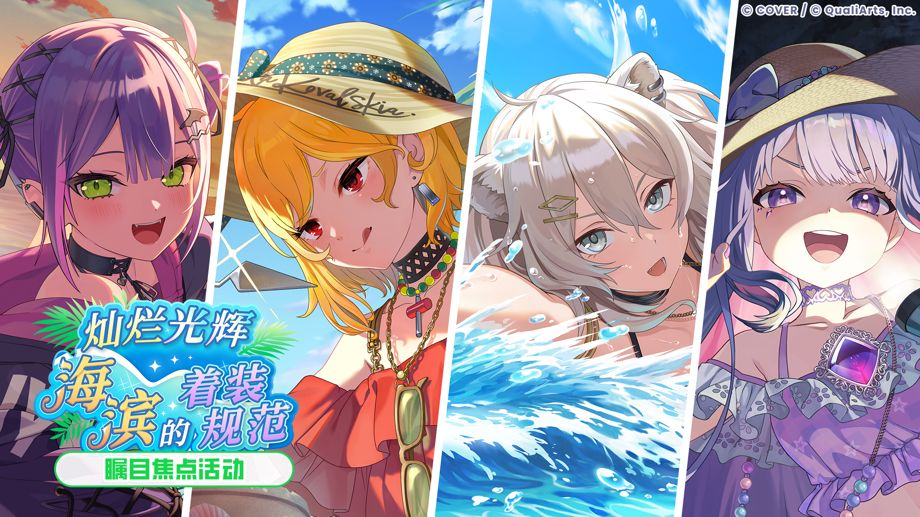
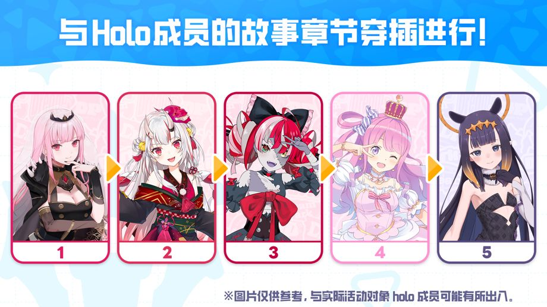
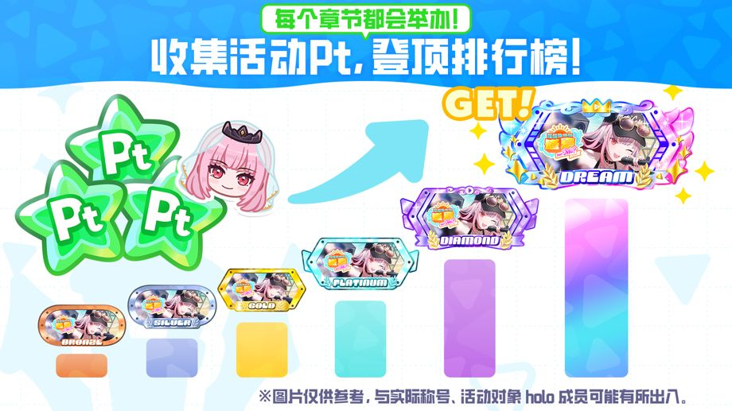
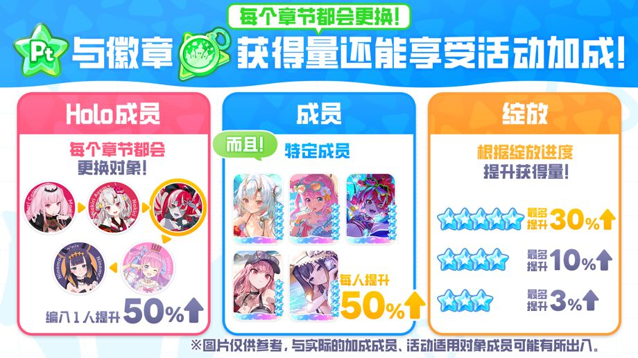
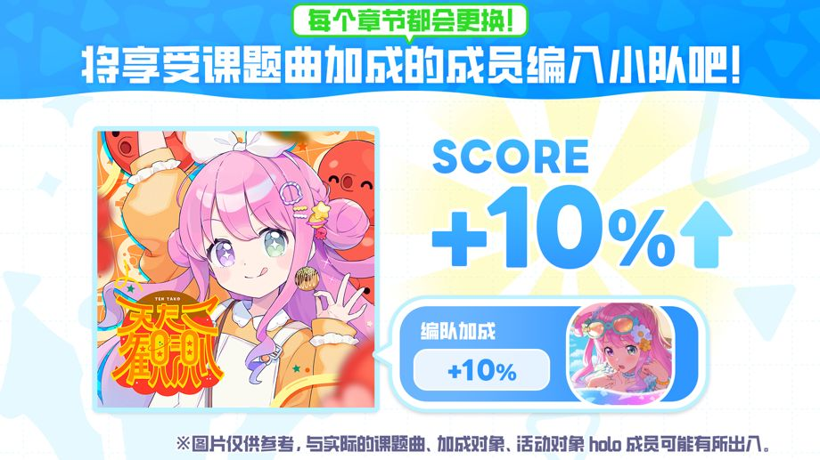
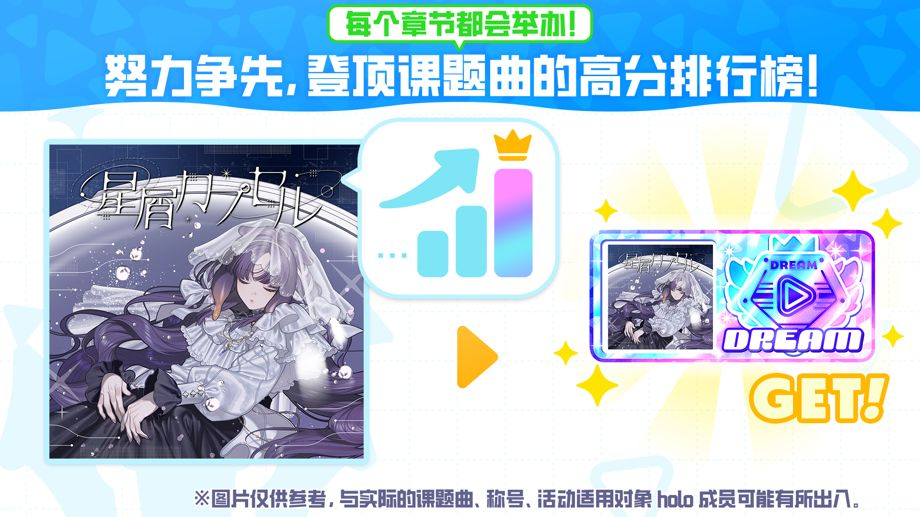

瞩目焦点活动《灿烂光辉，海滨的着装规范》上线！
◆参加条件
通关主线故事第1章第4话《Mythical Connection》
◆活动时间
・活动时段
2026-10-19 20:00:00,2026-10-27 19:59:59
・章节1：常暗永远
2026-10-19 20:00:00,2026-10-21 19:59:59
・章节2：Kaela Kovalskia
2026-10-21 20:00:00,2026-10-23 19:59:59
・章节3：狮白牡丹
2026-10-23 20:00:00,2026-10-25 19:59:59
・章节4：Koseki Bijou
2026-10-25 20:00:00,2026-10-27 19:59:59
◆成绩公布时段
章节1：2026-10-22 12:00:00 ～
章节2：2026-10-24 12:00:00 ～
章节3：2026-10-26 12:00:00 ～
章节4：2026-10-28 12:00:00 ～
所有章节的排行榜成绩公示统一于2026-11-02 19:59:59截止。
◆排名奖励发放时段
2026-10-28 12:00:00,2026-11-02 19:59:59
◆活动徽章兑换期限
2026-11-02 19:59:59
活动概要

“瞩目焦点活动”会分章节展示不同holo成员的故事。
每个章节的活动期间，游玩演出或迷你游戏，即可获得活动Pt和活动徽章。
搜集各个章节的活动Pt，即可观看该章节的剧情。
此外，收集各个章节的活动徽章，还可分别在兑换所兑换活动回忆卡等道具。
◆活动回忆卡
・章节1：常暗永远

・章节2：Kaela Kovalskia

・章节3：狮白牡丹

・章节4：Koseki Bijou

活动Pt排行榜

每个章节都设有活动Pt排行榜，会按照玩家在章节上线期间，累计获得的活动Pt进行排名。
若成绩进入排行榜，可获得活动限定称号等奖励。
※详情请查看［活动］→［排行榜］→［活动Pt排行榜］。
活动获得加成

在“瞩目焦点活动”中，不同章节拥有不同的活动加成成员。
活动加成能够提升演出的活动Pt和活动徽章的获得量。
演出奖励的获得加成，分为“特定成员加成”“holo成员加成”以及“绽放加成”3种。
・特定成员加成：将要求的特定成员编入小队挑战演出，即可提升奖励获得量
・holo成员加成：将要求的Holo成员编入小队挑战演出，即可提升奖励获得量
・绽放加成：根据编入小队的成员的绽放状况，即可提升演出奖励的获得量
另外，活动加成还能够提升迷你游戏活动Pt和活动徽章的获得量。
迷你游戏奖励的获得加成，分为“迷你游戏加成”和“特定成员加成”2种。
・迷你游戏加成：游玩特定的迷你游戏，即可提升奖励获得量
・特定成员加成：只需持有要求的成员，即可提升奖励获得量
◆有加成效果的holo成员
章节1：常暗永远
章节2：Kaela Kovalskia
章节3：狮白牡丹
章节4：Koseki Bijou
◆有加成效果的成员（所有章节共通）
・★5 树荫下的悠闲假日 常暗永远
・★5 树荫下编织的Shiny Memory Kaela Kovalskia
・★5 一心一意的嗦面时间 狮白牡丹
・★5 笑容灿烂的Sand castle Koseki Bijou
◆有加成效果的迷你游戏（所有章节共通）
・拼配厨房
※详情请查看［活动］→［活动加成］。
活动得分加成

将有活动加成的成员编入小队并挑战活动课题曲，可以获得活动得分加成效果。
每首活动课题曲对应的得分加成成员不同。
“瞩目焦点活动”的各个章节有不同的课题曲。
◆活动课题曲
章节1：Shallow Shadow
章节2：Forge My Soul
章节3：Amaryllis
章节4：CORE//UNBREAKABLE
※详情请查看［活动］→［活动加成］。
高分排行榜

每章的活动课题曲，都设有供玩家在活动期间竞争的高分排行榜。
若成绩进入排行榜，可获得活动限定称号作为奖励。
※平时得分和活动得分都会保存在该曲目的记录当中。
※详情请查看［活动］→［排行榜］→［高分排行榜］。
注意事项
・在当前活动中获得的Pt和徽章，无法继承到下一次活动。
・活动徽章超过兑换期限就将作废，还请注意。
・在排行榜奖励发放期间登录游戏，点击［乐园］→［菜单图标］→［礼物］即可领取排名奖励。
・如果在排名奖励发放期间没有登录游戏，在发放时段结束后仍然可以通过礼物箱领取奖励。
・在排行榜成绩公布期间没有领取的任务奖励，可以在公布结束后前往［乐园］→［菜单图标］→［礼物］进行领取。
・当前活动兑换所提供的活动回忆卡可能会在今后返场复刻。
・成绩公布时段结束后，可以通过［影城］→［Holo成员故事］→［成员个人故事］查看活动剧情。
・受通信状况等因素影响，开始及结束时间可能会出现1秒上下的误差。
・活动时间和内容，可能会不经预告直接变更。
・详情请在［乐园］→［活动］中选择本次活动进行查看。